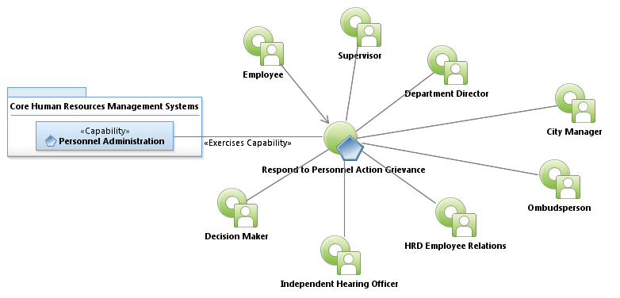

Activity Model: Respond to Personnel Action Grievance

Use Case Model: Respond to Personnel Action Grievance
Architect: Aaron Brown, IT Enterprise Architect Senior
Date Last Modified: 02/20/2013
User Review: Jeff Burton, Employee Relations Manager
Date: 2/20/2013
Respond to an employee complaint or concern regarding disciplinary probation, denial of promotion, demotion, suspension, or termination. Conduct grievance hearing, if necessary, and provide a final response. If the employee is unhappy with the response, it can be escalated to the next higher level, culminating with a decision by the City Manager.
Follow link to Role Definitions

Use Case Model: Respond to Personnel Action Grievance
Activity Model: Respond to Personnel Action Grievance